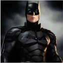
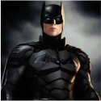

BATMAN
Batman (conocido inicialmente como Bat-Man y en español como el Hombre Murciélago) es un personaje de cómic creado por los estadounidenses Bob Kane y Bill Finger,13 y propiedad de DC Comics. Apareció por primera vez en la historia titulada «El caso del sindicato químico» de la revista Detective Comics N.º 27, lanzada por la editorial National Publications el 30 de marzo de 1939.


HARLEY QUINN
Harley Quinn (nombre real Dr. Harleen Frances Quinzel) es un personaje ficticio creado por los estadounidenses Paul Dini y Bruce Timm para la editorial DC Comics. Quinn hizo su debut en el vigésimo-segundo episodio de Batman: la serie animada, «El favor del Joker», en septiembre de 1992 y se convirtió en una villana recurrente en la serie.


MUJER MARAVILLA
La Mujer Maravilla (en inglés: Wonder Woman) es una superheroína ficticia creada por William Moulton Marston para la editorial DC Comics. Es una princesa guerrera de las Amazonas, pueblo ficticio basado en el de las amazonas de la mitología griega. En su tierra natal es conocida como la princesa Diana de Temiscira pero fuera de esta utiliza la identidad secreta de Diana Prince.


SUPERMAN
Superman (en español: Superhombre) es un superhéroe ficticio que apareció por primera vez en los cómics estadounidenses publicados por DC Comics. El personaje fue creado por el escritor estadounidense Jerry Siegel y el artista canadiense Joe Shuster en 1933 cuando ambos se encontraban viviendo en Cleveland, Ohio.